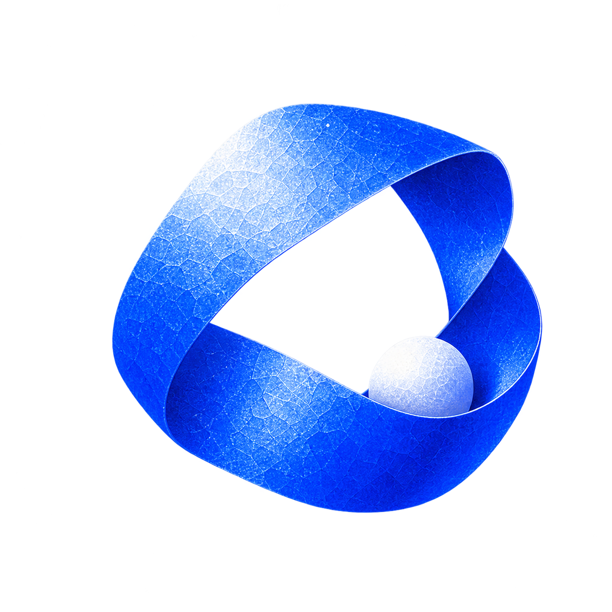
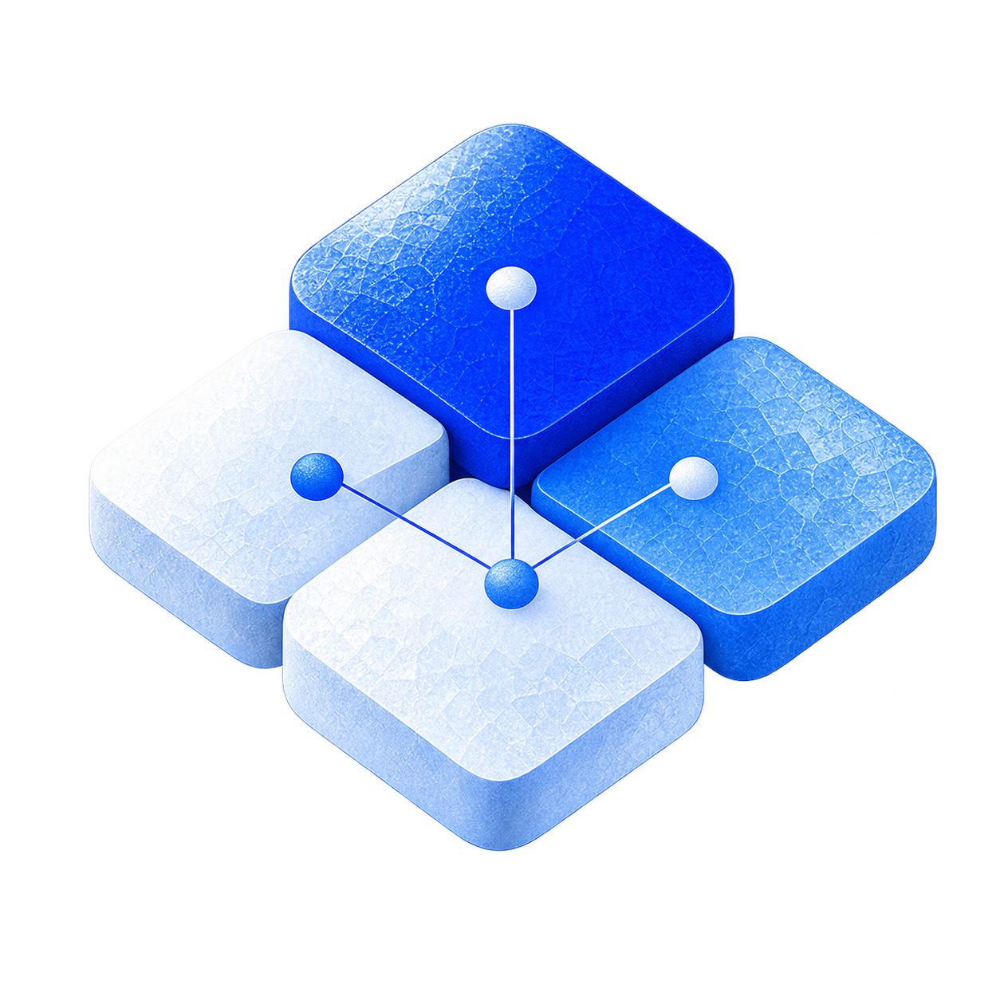
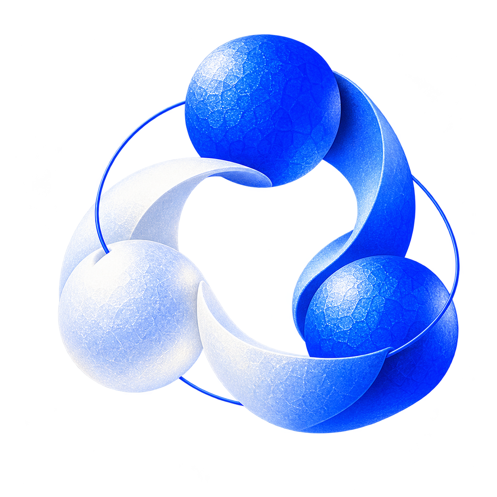
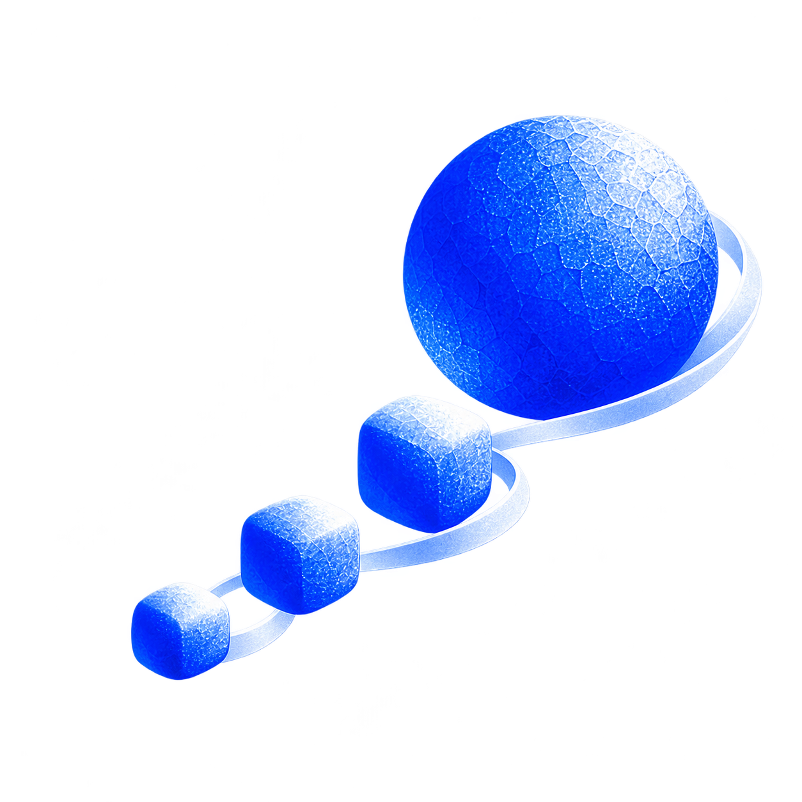
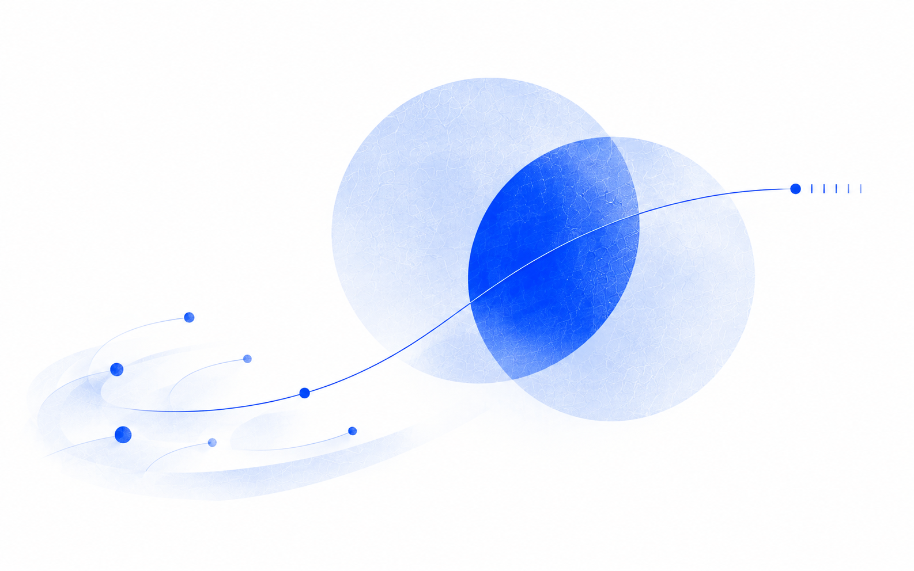

THINKING / FROM PRACTICE
做过之后，留下的问题。
一些想法来自项目里的取舍，一些来自没有做成的尝试。这里记录我怎样理解变化，也记录哪些问题还没有答案。

04 / 产品与判断
Design System 与 Infrastructure，都在为上层工作建立基础。
公共组件应该承接多少差异？从 InfraD 与 DataSuite 的实践，讨论共用、迁移和持续维护。


